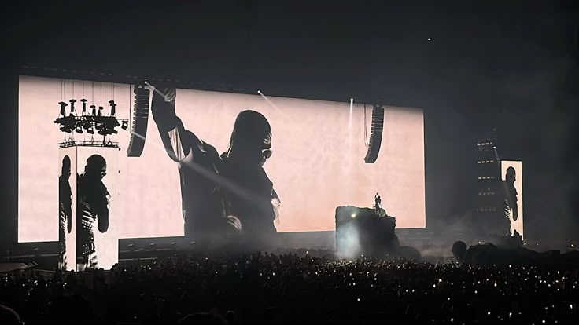

Não o Travis Scott, e sim o Jacques!
Travis Scott, cujo nome verdadeiro é Jacques Berman Webster II, nasceu em 30 de abril de 1991, em Houston, Texas. Cresceu em uma área conhecida como Missouri City e, desde jovem, mostrou interesse pela música, influenciado por gêneros como hip hop, jazz e soul. Inicialmente, estudou na Universidade do Texas em San Antonio, mas abandonou o curso para seguir sua carreira musical. Mudou-se para Los Angeles, onde começou a produzir e lançar suas próprias faixas, ganhando atenção da indústria até ser descoberto por T.I. e, posteriormente, por Kanye West, com quem colaborou em projetos importantes. Sua carreira decolou de vez com o lançamento do álbum Rodeo em 2015, que trouxe o hit “Antidote”.
Após o lançamento de Rodeo (2015), Travis Scott continuou a se destacar na cena musical com uma sequência de projetos de sucesso. Em 2016, ele lançou Birds in the Trap Sing McKnight, que estreou no topo da Billboard 200 e consolidou seu nome como um dos principais nomes do trap e hip hop moderno. No mesmo ano, Travis fundou seu próprio selo, a Cactus Jack Records, visando apoiar novos talentos. Em 2017, em parceria com Quavo (do grupo Migos), ele lançou o álbum colaborativo Huncho Jack, Jack Huncho, mostrando sua versatilidade e capacidade de trabalhar com outros grandes artistas. Em 2018, veio seu maior sucesso até então: o álbum Astroworld, considerado um marco em sua carreira. O projeto foi amplamente elogiado por sua produção psicodélica e por faixas como “Sicko Mode”, “Stargazing” e “Stop Trying to Be God”. Astroworld rendeu a Travis indicações ao Grammy e uma turnê mundial aclamada pela crítica, além de inspirar o festival de mesmo nome em Houston. Em 2020, ele lançou o EP JackBoys, com artistas de seu selo Cactus Jack, incluindo Don Toliver, Sheck Wes e outros. Em 2023, Travis retornou com o álbum Utopia, um projeto ambicioso que expandiu ainda mais sua sonoridade, trazendo colaborações com Beyoncé, The Weeknd, Drake e outros. Paralelamente à música, Travis Scott também se envolveu com cinema, lançando o documentário Look Mom I Can Fly (2019) na Netflix, que mostra os bastidores de sua carreira e o impacto de sua arte na cultura jovem.
Utopia, lançado por Travis Scott em 28 de julho de 2023, é o quarto álbum de estúdio do rapper e um dos projetos mais aguardados da década no hip hop. O álbum marca uma nova fase artística na carreira de Travis, com uma abordagem mais experimental, densa e conceitual em relação a seus trabalhos anteriores. Inspirado por artistas como Kanye West (especialmente Yeezus) e por referências cinematográficas e sonoras de ficção científica e futurismo, Utopia mergulha em temas como fama, alienação, ambição e as contradições do paraíso moderno. O álbum conta com 19 faixas e diversas participações de peso, incluindo Beyoncé, Drake, The Weeknd, Playboi Carti, SZA, Future, Bad Bunny, entre outros. Singles como “K-POP” (com Bad Bunny e The Weeknd), “Delresto (Echoes)” (com Beyoncé) e “Meltdown” (com Drake) chamaram atenção tanto pelas batidas ousadas quanto pelas letras provocativas. A produção é marcada por colagens sonoras complexas, uso pesado de sintetizadores, viradas inesperadas e vocais distorcidos. Utopia foi bem recebido tanto pela crítica quanto pelos fãs, estreando no topo das paradas e reafirmando o status de Travis Scott como um dos artistas mais visionários da música contemporânea. O projeto também foi acompanhado por um evento de lançamento grandioso na Itália, no Coliseu de Roma, reforçando o caráter épico e conceitual da obra.
Os shows de Travis Scott são famosos por sua energia explosiva, atmosfera caótica e conexão intensa com o público. Ele é conhecido por transformar suas apresentações em experiências quase cinematográficas, combinando iluminação pesada, pirotecnia, palcos elaborados e um clima de festival permanente. Os fãs, chamados de ragers, costumam ir aos shows preparados para “entrar na vibe” — com mosh pits, pulos sincronizados e uma entrega emocional total à música, algo que Travis sempre incentivou como parte central de sua estética rebelde e libertadora.